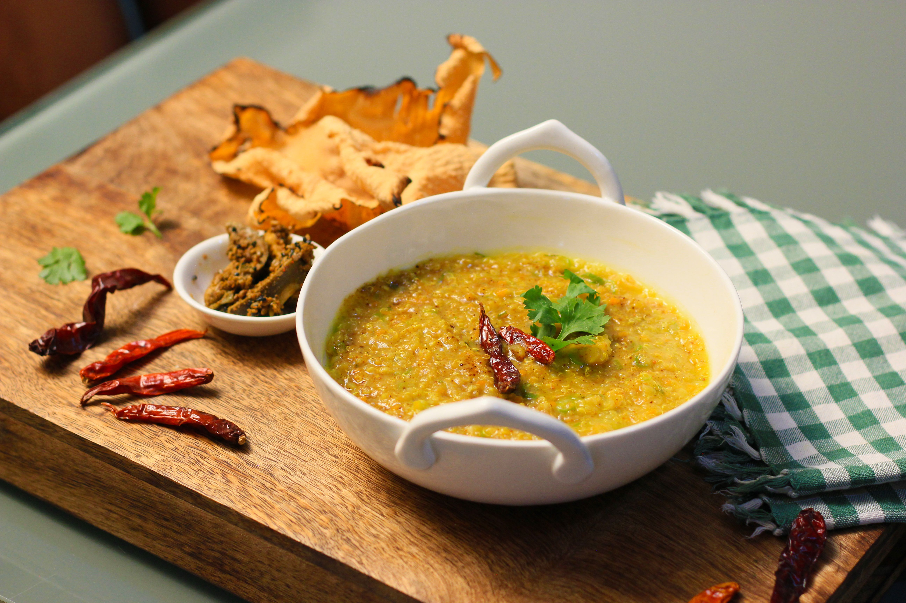

Odin Recipes khichdi

- 1 cup rice
- ½ cup yellow moong dal
- 1 small onion, chopped
- 1 small tomato, chopped
- small carrot, chopped
- 1 small potato, chopped
- 1 teaspoon cumin seeds
- ½ teaspoon turmeric powder
- ½ teaspoon red chilli powder
- 1 tablespoon ghee or oil
- –5 cups water
- Salt to taste
- 1 small piece of ginger, grated
- Fresh coriander leaves for garnishing
Steps
- Wash the rice and moong dal thoroughly and soak them in water for about 15–20 minutes.
- Heat ghee or oil in a pressure cooker and add cumin seeds.
- Once the cumin seeds start to crackle, add the chopped onion and sauté until it becomes slightly golden.
- Add ginger, tomato, carrot, and potato, and cook for 2–3 minutes.
- Add turmeric powder, red chilli powder, and salt. Mix everything well.
- Drain the soaked rice and dal, then add them to the cooker.
- Add 4–5 cups of water and mix well.
- Close the pressure cooker and cook for about 3–4 whistles on medium heat.
- Allow the pressure to release naturally, then open the cooker and mix the khichdi well.
- Garnish with fresh coriander leaves and serve hot with ghee, curd, pickle, or papad.
Home